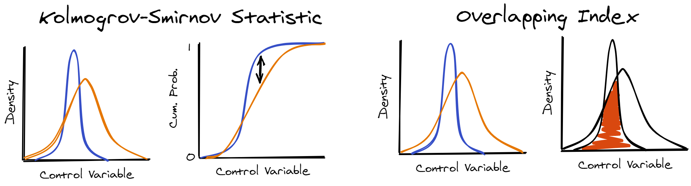

When you match distribution-wise, you’re controlling for confounding variables by making sure that they are similarly distributed in all experimental conditions. To do this, you can use any assumption-free measure of distributional similarity/distance. The two measures I like to use to do this are: the Kolmogrov-Smirnov Statistic, and the Overlapping Index (Pastore & Calgni, 2019). When you’re matching by the overlapping index you want to maximise, but when you’re matching by the Kolmogrov-Smirnov (K-S) statistic, you want to minimise. Apart from this, the two measures will produce similar results.

Here you can find some example code. All the code here uses the same dataset: stim_pool.csv. The first two examples are simple cases, where you want to match two conditions on one numeric variable. The other examples show how you can adapt this to more complicated designs.
The K-S statistic can be calculated with the default R installation. To calculate the overlapping index, you will probably want to install the package, overlapping:
install.packages("overlapping")| Title/Link | Measure | No. Conditions | No. Control Variables |
|---|---|---|---|
| 01 - Maximising Distributional Overlap | Overlap | 2 | 1 |
| 02 - Minimising Kolmogrov-Smirnov | K-S Statistic | 2 | 1 |
| 03 - Multiple Control Variables | Overlap | 2 | 3 |
| 04 - Matching >2 Conditions | Overlap | 3 | 3 |
| 05 - How Many Iterations to Run? | Overlap | 3 | 3 |